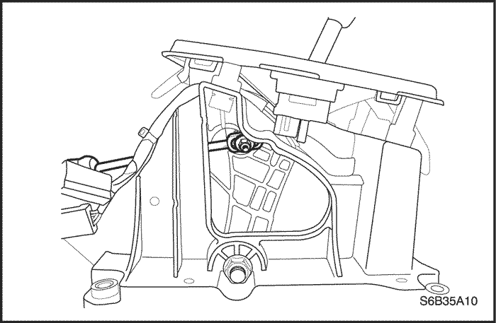
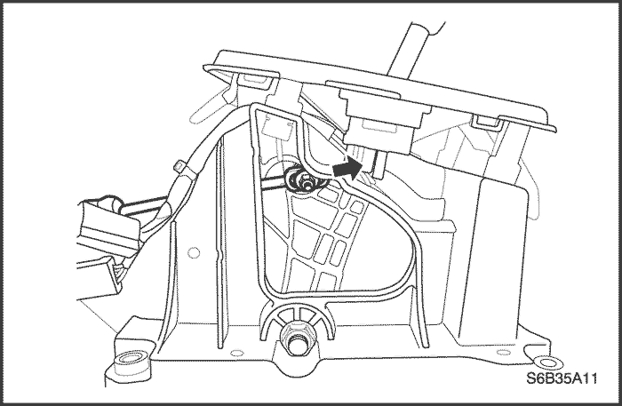
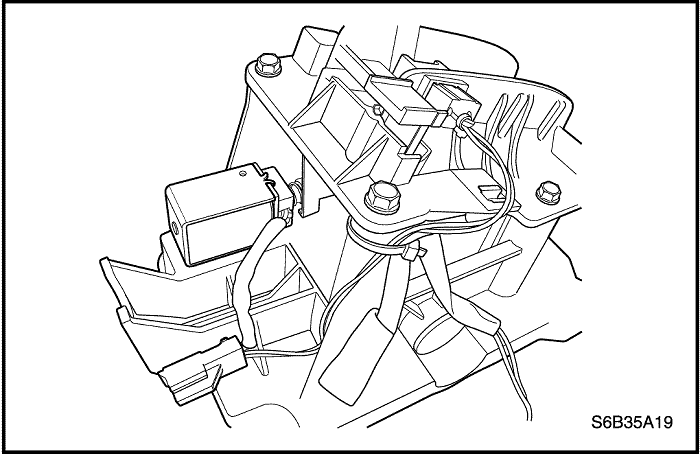

MANTENIMIENTO Y REPARACIÓN
servicio con vehículo en marcha


Procedimiento de comprobación del nivel de líquido del transeje
Aviso: Compruebe el nivel de aceite cuando la temperatura de la caja de cambios sea de 70°C~80°C (158°F~176°F).
Aviso: Mientras se comprueba el nivel de aceite, la palanca selectora debe estar en la posición P.
Aviso: Al añadir líquido o realizar un cambio completo del líquido, utilice siempre ESSO JWS 3309 o TOTAL FLUID III G. De no utilizar el líquido adecuado, se dañarán los manguitos y las juntas, provocando fugas.

- Asegúrese de que el vehículo está nivelado.
- Cambie a todas las gamas desde "P" a "1" y vuelva a seleccionar "P" con el motor en ralentí.
- Saque la varilla de nivel de aceite de la caja de cambios y compruebe el nivel de aceite.
- El nivel correcto del aceite debe estar entre las muescas de HOT MIN (mínimo en caliente) y HOT MAX (máximo en caliente).
- Si el nivel de aceite está por debajo de la muesca de MIN, añada aceite para caja de cambios por el tubo de llenado y compruebe si hay fugas en la caja de cambios.
- Si hay aceite por encima de la muesca MAX, la caja de cambios está llena en exceso. Drene aceite por el tapón de vaciado del cárter de aceite. Compruebe el nivel de aceite de la caja de cambios.

Procedimiento de drenaje del aceite
Procedimiento de drenaje
- Levante y sujete el vehículo. Consulte los "Procedimientos para levantar el vehículo", Sección OB, Información general.
- Coloque un recipiente para drenar el aceite debajo de la caja de cambios.
- Quite el tapón de drenaje de aceite y deje que se vacíe todo el aceite.
- Limpie las roscas del tapón de drenaje.
- Ponga el tapón de drenaje de aceite.
Apretar
Apriete el tapón de drenaje de aceite hasta 17 N•m (13 lb-pie).
Procedimiento de llenado
- Retire el recipiente de drenaje y baje el vehículo.
- Añada tres cuartos de la cantidad recomendada de ESSO JWS 3309 o TOTAL FLUID III G.
- Ponga en marcha el motor y déjelo que alcance la temperatura normal de funcionamiento.
- Pase el selector de velocidades por todas las posiciones.
- Compruebe el nivel de aceite y añada aceite hasta que la varilla de nivel indique un nivel seguro.
Localización de fugas de fluido
Método general
- Verifique si la fuga es de aceite de la caja de cambios.
- Limpie a fondo el área con supuestas fugas.
- Deje que la caja de cambios alcance la temperatura normal de funcionamiento de 176-194°F (80-90°C).
- Estacione el vehículo sobre un cartón o papel limpio.
- Pare el motor y busque manchas de aceite en el papel.
- Efectúe las reparaciones necesarias para corregir la fuga.
Método de pulverización
- Limpie a fondo el área con supuestas fugas.
- Aplique un polvo en aerosol, como polvo podológico, en el área con supuestas fugas.
- Deje que la caja de cambios alcance la temperatura normal de funcionamiento de 176-194°F (80-90°C).
- Apague el motor.
- Inspeccione el área de supuestas fugas y siga la ruta de aceite por el polvo para encontrar la fuente de la fuga.
- Efectúe las reparaciones necesarias para corregir la fuga.
Una vez encontrado el punto por donde se produce la fuga, debe determinarse su origen y corregirse el problema.
Reparación de porosidad de la caja
- Determine la zona con fugas. Consulte el apartado "Localización de fugas de fluido" en esta sección.
- Limpie la zona de la fuga con disolvente. Séquela con aire.
Precaución: El cemento epoxídico puede provocar irritación en la piel y daños en los ojos. Lea y siga todas las instrucciones que aparecen en la etiqueta del envase del fabricante.
- Haga una mezcla con la cantidad suficiente de cemento epoxídico siguiendo las recomendaciones del fabricante.
- Cuando la carcasa de la caja de cambios esté limpia, use un cepillo de ácido de soldadura seco y limpio para aplicar el cemento epoxídico.
- Deje que el cemento epoxídico se seque durante tres horas antes de arrancar el motor.
Lavado del refrigerador de aceite
Procedimiento de lavado
- Drene el aceite de la caja de cambios y vuelva a llenarla de aceite. Consulte el apartado "Procedimiento de drenaje del aceite" de esta sección.
- Deje el motor en ralentí durante 5 minutos.
- Drene el aceite de la caja de cambios y vuelva a llenarla de aceite. Consulte el apartado "Procedimiento de drenaje del aceite" de esta sección.

Ajuste del cable de mando
procedimiento de ajuste
Para que el cambio de marchas sea adecuado, las distintas posiciones del cable de mando deben coincidir en la palanca de mando del cambio del vehículo y en la palanca selectora de la caja de cambios.
Coloque la palanca de mando del cambio en posición PARK (estacionamiento) y compruebe si la conexión de la palanca selectora está en la posición más avanzada. Si no lo está, deberá realizarse el siguiente ajuste:
- Desconecte el cable negativo de la batería.
- Desmonte el panel de guarnecido de la consola del piso. Consulte la Sección 9G, Guarnecido interior.
- Ponga la palanca de mando del cambio en la posición PARK.

- Afloje la tuerca de ajuste del cable de mando.

- Mueva la palanca del interruptor de TR en sentido contrario a las agujas del reloj hasta que la palanca se detenga.

- Tire del cable de mando del cambio hasta que quede tirante y apriete la tuerca de ajuste de dicho cable.
Apretar
Apriete la tuerca de ajuste del cable de mando hasta 8 N•m (71 lb-pulg.).
- Coloque el panel de guarnecido de la consola del piso. Consulte la Sección 9G, Guarnecido interior.
- Conecte el cable negativo de la batería.

Conjunto de palanca de control de cambios
Procedimiento de desmontaje
- Desconecte el cable negativo de la batería.
- Desmonte la consola del piso. Consulte la Sección 9G, Guarnecido interior.
- Desenchufe los conectores del cableado de la palanca de mando del cambio de marchas.
- Afloje la tuerca de ajuste del cable de mando.
- Desconecte el cable de mando del conjunto de la palanca de mando del cambio de marchas.

- Quite los tornillos del conjunto de la palanca de mando del cambio de marchas.
- Desmonte el conjunto de la palanca de mando del cambio de marchas.
procedimiento de montaje
- Monte el conjunto de la palanca de mando del cambio de marchas y coloque los tornillos de fijación.
Apretar
Apriete los tornillos de fijación del conjunto de la palanca de mando del cambio de marchas hasta 8 N•m (71 lb-pulg.).
- Conecte el cable de mando al conjunto de la palanca de mando del cambio de marchas.
- Apriete la tuerca de ajuste del cable de mando.
Apretar
Apriete la tuerca de ajuste del cable de mando hasta 8 N•m (71 lb-pulg.).
- Enchufe el conector del cableado.
- Ajuste el cable de mando. Consulte el apartado "Ajuste del cable de mando" de esta sección.
- Monte la consola del piso. Consulte la Sección 9G, Guarnecido interior.
- Conecte el cable negativo de la batería.
Solenoide BTSI
Procedimiento de desmontaje
- Desconecte el cable negativo de la batería.
- Desmonte el conjunto de la palanca de mando del cambio de marchas. Consulte el apartado "Conjunto de palanca de control de cambios" en esta sección.

- Desmonte la tapa del selector de cambio. Consulte el apartado "Tapa del selector de cambio" en esta sección.

- Desenchufe los conectores del cableado.
- Quite los tornillos de fijación del solenoide del BTSI.
- Sustituya el solenoide del BTSI.
procedimiento de montaje
Aviso: Compruebe que el solenoide del BTSI está en su posición correcta al instalar el solenoide.
- Monte el solenoide del BTSI con sus tornillos.
Apretar
Apriete los tornillos hasta 1,5 N•m (13 lbs-pulg.).
- Enchufe los conectores del cableado.
- Monte la tapa del selector de cambio. Consulte el apartado "Tapa del selector de cambio" en esta sección.
- Monte el conjunto de la palanca de mando del cambio de marchas. Consulte el apartado "Conjunto de palanca de control de cambios" en esta sección.
- Conecte el cable negativo de la batería.

Interruptor de alcance de transmisión (TR)
Procedimiento de desmontaje
- Desconecte el cable negativo de la batería.
- Desenchufe el conector eléctrico del interruptor de TR del mazo de cables.

- Desmonte el anillo en E.
- Desconecte el cable de control de cambios de la palanca del interruptor de TR.

- Quite la tuerca de fijación y la arandela y desmonte la palanca de mando.
- Use un destornillador para desprender la arandela de bloqueo y quite la tuerca.

procedimiento de montaje
- Monte el interruptor de TR en el eje de la palanca de la válvula manual y coloque provisionalmente los 2 tornillos de ajuste.
- Coloque la nueva arandela de bloqueo y las tuercas.
Apretar
Apriete las tuercas hasta 12 N•m (106 lb-pulg.).

- Monte provisionalmente la palanca de mando.
- Gire la palanca en sentido contrario a las agujas del reloj hasta que haga tope, luego gírela en el sentido de las agujas del reloj 2 muescas.
- Desmonte la palanca de mando.

- Alinee la ranura con la línea básica de punto muerto y luego coloque los 2 tornillos.
Apretar
Apriete los 2 tornillos hasta 5,4 N•m (48 lb-pulg.).

- Use un destornillador para colocar la tuerca con la arandela de bloqueo.

- Monte la palanca de mando, la arandela y la tuerca.
Apretar
Apriete la tuerca hasta 12 N•m (106 lb-pulg.).
- Conecte el cable de mando al interruptor de TR.
- Conecte el conector eléctrico del interruptor de TR.
- Ajuste el cable de mando. Consulte el apartado "Ajuste del cable de mando" de esta sección.
- Coloque la tuerca de ajuste del cable de mando.
Apretar
Apriete la tuerca de ajuste del cable de mando hasta 8 N•m (71 lb-pulg.).
- Conecte el cable negativo de la batería.
Cable de control de cambios
Procedimiento de desmontaje
- Desconecte el cable negativo de la batería.
- Desmonte la consola del piso. Consulte la Sección 9G, Guarnecido interior.
- Quite la tuerca de ajuste del cable.
- Desconecte el cable de mando del conjunto de la palanca de mando del cambio de marchas.
- Quite el anillo de retención en forma de E del cable de mando del cambio de marchas.
- Desconecte el cable de control de cambios del interruptor de TR.

- Quite el anillo en E del soporte del cable de mando del cambio de marchas y desconecte dicho cable.
- Desconecte el cable de mando de su sujeción.
- Retire el cable de mando del vehículo.
procedimiento de montaje
- Monte el cable de mando del cambio de marchas en el vehículo.
- Conecte el cable de mando a su sujeción.
- Coloque el anillo en E al soporte del cable de mando del cambio de marchas y conecte dicho cable.
- Conecte el cable de control de cambios al interruptor de TR.
- Coloque el anillo de retención en E del cable de mando del cambio de marchas.
- Conecte el cable de mando al conjunto de la palanca de mando del cambio de marchas.
- Coloque la tuerca de ajuste del cable.
Apretar
Apriete la tuerca de ajuste del cable hasta 8 N•m (71 lb-pulg.).
- Monte el panel de guarnecido en la consola del piso. Consulte la Sección 9G, Guarnecido interior.
- Conecte el cable negativo de la batería.
Tapa del selector de cambio
Procedimiento de desmontaje
- Desconecte el cable negativo de la batería.
- Desmonte la consola del piso. Consulte la Sección 9G, Guarnecido interior.
- Extraiga los tornillos del pomo de la palanca selectora de cambio.
- Desenchufe los conectores.
- Desmonte la tapa del selector del alojamiento del selector de cambio.
procedimiento de montaje
- Enchufe los conectores a la tapa del selector de cambio.
- Coloque la tapa del selector de cambio en su alojamiento.
- Monte el pomo de la palanca selectora de cambio.
Apretar
Apriete el tornillo de la palanca de cambios hasta 2 N•m (18 lb-pulg.).
- Monte la consola del piso. Consulte la Sección 9G, Guarnecido interior.
- Conecte el cable negativo de la batería.

Sensor de velocidad del eje primario (ISS)
Procedimiento de desmontaje
- Desconecte el cable negativo de la batería.
- Desenchufe el conector eléctrico del sensor de velocidad del eje primario (ISS).

- Quite el tornillo de retención del sensor de ISS.
- Desmonte el sensor de ISS de la caja de cambios.
procedimiento de montaje
Aviso: Lubrique la junta tórica con ATF.
- Coloque la nueva junta tórica en el sensor de ISS.
- Monte el sensor de ISS y coloque el tornillo de retención en la carcasa de la caja de cambios.
Apretar
Apriete el tornillo de retención del sensor de ISS hasta 5,4 N•m (48 lb-pulg.).

- Enchufe el conector eléctrico del sensor de ISS.
- Conecte el cable negativo de la batería.

Sensor de velocidad del eje secundario (OSS)
Procedimiento de desmontaje
- Desconecte el cable negativo de la batería.
- Desenchufe el conector eléctrico del sensor de velocidad del eje secundario (OSS).

- Quite el tornillo de retención del sensor de OSS.
- Desmonte el sensor de OSS de la caja de cambios.

procedimiento de montaje
Aviso: Lubrique la junta tórica con ATF.
- Coloque una junta tórica nueva en el sensor de velocidad del eje secundario (OSS).
- Monte el sensor de OSS y coloque el tornillo de retención en la caja de cambios.
Apretar
Apriete el tornillo de retención del sensor de OSS hasta 7,4 N•m (65 lb-pulg.).
- Enchufe el conector eléctrico del sensor de OSS.
- Conecte el cable negativo de la batería.

Módulo de control electrónico de la transmisión (TCM)
Procedimiento de desmontaje
- Desconecte el cable negativo de la batería.
- Desenchufe el conector eléctrico del módulo de control electrónico de la transmisión (TCM).

- Quite los tornillos de retención del TCM.
- Desmonte el TCM.
procedimiento de montaje
- Conecte el cable negativo de la batería.
- Coloque los tornillos de retención del TCM.
Apretar
Apriete los tornillos de retención del TCM hasta 5 N•m (44 lb-pulg.).
- Enchufe el conector eléctrico del TCM.
- Conecte el cable negativo de la batería.

Tubos y manguitos de entrada del refrigerador de aceite
Procedimiento de desmontaje
- Levante y sujete el vehículo.
- Vacíe el aceite de la caja de cambios.
- Quite el clip del conector roscado del radiador y desconecte los manguitos del refrigerador de aceite.

- Quite el tornillo del tubo de entrada del refrigerador de aceite de la caja de cambios.
- Quite la tuerca del racor del tubo de entrada de la caja de cambios.
- Retire los manguitos y el tubo de entrada del refrigerador de aceite.

procedimiento de montaje
- Coloque la tuerca del racor del tubo de entrada del refrigerador de aceite en la caja de cambios.
Apretar
Apriete la tuerca del racor del tubo de entrada del refrigerador de aceite hasta 35 N•m (26 lb-pie).
- Coloque el tornillo del tubo de entrada del refrigerador de aceite en la caja de cambios.
Apretar
Apriete el tornillo del tubo de entrada del refrigerador de aceite hasta 9 N•m (80 lb-pulg.).
- Conecte los manguitos del refrigerador de aceite y coloque el clip en el conector roscado del radiador.
- Baje el vehículo.
- Llene la caja de cambios con aceite.

Tubos y manguitos de salida del refrigerador de aceite
Procedimiento de desmontaje
- Vacíe el aceite de la caja de cambios.
- Quite el tornillo de unión del tubo de salida delantero del radiador.
- Quite el tornillo del clip del tubo de salida delantero del radiador.

- Quite el tornillo del clip del tubo de salida trasero de la caja de cambios.
- Quite la tuerca del racor del tubo de salida trasero de la caja de cambios.
- Retire los manguitos y el tubo de salida del refrigerador de aceite.

procedimiento de montaje
- Coloque la tuerca del racor del tubo de salida trasero del refrigerador de aceite.
Apretar
Apriete la tuerca del racor del tubo de salida trasero del refrigerador de aceite hasta 35 N•m (26 lb-pie).
- Coloque el tornillo del clip del tubo de salida trasero del refrigerador de aceite.
Apretar
Apriete el tornillo del clip del tubo de salida trasero del refrigerador de aceite hasta 9 N•m (80 lb-pulg.).

- Coloque el tornillo de unión del tubo de salida delantero en el radiador.
Apretar
Apriete el tornillo de unión del tubo de salida hasta 35 N•m (26 lb-pie).
- Coloque el tornillo del clip del tubo de salida delantero en el radiador.
Apretar
Apriete el tornillo del clip del tubo de salida delantero hasta 9 N•m (80 lb-pie).
- Llene la caja de cambios con aceite.

Conjunto de transeje
Herramientas necesarias
Fijación del soporte del motor DW110-060
Fijación del soporte de la caja de cambios (80-40 LE) DW260-011
Fijación del soporte de la caja de cambios (81-40 LE) DW260-012
Procedimiento de desmontaje
- Desmonte la batería y la bandeja portabatería. Consulte la Sección 1E, Sistema eléctrico del motor.
- Vacíe el aceite de la caja de cambios. Consulte el apartado "Procedimiento de drenaje del aceite" de esta sección.
- Desmonte los conjuntos de los árboles de transmisión derecho y izquierdo. Consulte la Sección 3A, Árbol de transmisión de la caja de cambios automática.
- Desconecte de la caja de cambios los manguitos de entrada y salida del refrigerador de aceite.

- Desconecte el cable de mando de la caja de cambios. Consulte el apartado "Cable de mando del cambio de marchas" de esta sección.
- Monte la fijación del soporte del motor DW110-060 para sujetar el motor.

- Desenchufe el conector eléctrico del sensor de velocidad del eje primario (ISS).
- Desenchufe el conector eléctrico del sensor de velocidad del eje secundario (OSS).
- Desconecte el conector eléctrico del interruptor de TR.
- Desenchufe el conector eléctrico de la caja de cambios.

- Desmonte la tapa de la entrada de servicio.
- Quite los tornillos del convertidor de par.

- Quite el tornillo y la tuerca de conexión del bloque amortiguador.
- Coloque los tornillos del soporte de fijación trasero y monte dicho soporte.

- Quite los tres tornillos superiores del soporte de fijación de la caja de cambios.

- Quite los tres tornillos superiores de fijación de la caja de cambios al motor.

- Sujete la caja de cambios con el gato de la caja de cambios y la fijación del soporte DW260-011 (80-40 LE) o DW260-012 (81-40 LE).

- Quite los siete tornillos inferiores de fijación de la caja de cambios al motor.

- Desmonte la caja de cambios del vehículo con cuidado.
procedimiento de montaje
- Sujete la caja de cambios al gato de la caja de cambios y colóquela luego con cuidado en el vehículo.

- Coloque los siete tornillos inferiores de fijación de la caja de cambios al motor.
Apretar
Apriete los tornillos (a) hasta 73 N•m (54 lb-pie).
Apretar
Apriete los tornillos (b) hasta 31 N•m (23 lb-pie).
Apretar
Apriete los tornillos (c) hasta 21 N•m (15 lb-pie).

- Coloque los tres tornillos superiores de fijación de la caja de cambios al motor.
Apretar
Apriete los tres tornillos superiores de fijación de la caja de cambios al motor hasta 73 N•m (54 lb-pie).

- Coloque los tres tornillos superiores del soporte de fijación de la caja de cambios y monte el soporte.
Apretar
Apriete los tres tornillos superiores del soporte de fijación de la caja de cambios hasta 60 N•m (44 lb-pie).

- Coloque los tornillos del soporte de fijación trasero y monte el soporte.
Apretar
Apriete los tornillos del soporte de fijación trasero hasta 60 N•m (44 lb-pie).
- Coloque el tornillo y la tuerca de conexión del bloque amortiguador.
Apretar
Apriete el tornillo y la tuerca de la unión del bloque amortiguador hasta 80 N•m (59 lb-pie).
- Coloque los tornillos del convertidor de par.
Apretar
Apriete los tornillos convertidor de par hasta 45 N• m (33 lb-pie).
- Coloque la tapa de la entrada de servicio.
- Enchufe el conector eléctrico de la caja de cambios.
- Conecte el conector eléctrico del interruptor de TR.
- Enchufe el conector eléctrico del sensor de OSS.
- Enchufe el conector eléctrico del sensor de ISS.
- Retire la fijación del soporte del motor DW110-060.
- Conecte el cable de mando a la caja de cambios. Consulte el apartado "Cable de mando del cambio de marchas" de esta sección.
- Conecte los manguitos de entrada y salida del refrigerador de aceite a la caja de cambios.
- Monte los conjuntos de los árboles de transmisión derecho y izquierdo. Consulte la Sección 3A, Árbol de transmisión de la caja de cambios automática.
- Monte la batería y la bandeja portabatería. Consulte la Sección 1E, Sistema eléctrico del motor.
- Llene la caja de cambios con aceite. Consulte el apartado "Procedimiento de drenaje del aceite" de esta sección.
- Compruebe el nivel de aceite. Consulte el apartado "Procedimiento de comprobación del nivel de aceite de la caja de cambios" de esta sección.
 | |  | |
| © Copyright Chevrolet Europe. Reservados todos los derechos |